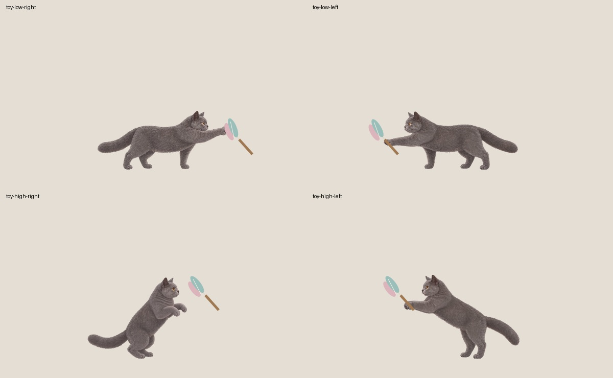

四段已接入本地候选，154已换成重返版，旧视频按哈希归档。未提交、未推送、未打发行包或更新正式安装。
共388帧，每段97帧、24 fps、4.04秒。低位151/152，羽毛相对支撑面的高度超过85逻辑单位时选择153/154。停步按左右实际爪尖水平偏移校准，抓取中保持朝向和根位置，完整落地后再换高度、真实转向或继续追跑。
909项回归通过；Windows和Mac宿主编译通过。WPF四场景分别完整播放0—96帧；Mac本机原生输入与系统鼠标端到端尚未验证。
153第25—29帧、154重返版第43—45帧仍触及原视频上沿（从0计数）；新版154已恢复旧版明显缺失的头顶，但并未达到提示词要求的10%顶部留白。所有源帧保留，不补画耳朵或裁掉问题帧。实际4.04秒长于提示词建议，未擅自加速或剪帧。
尺寸监测扫描1619帧、1642对（包含跑步、转向和接缝），保留424处阈值警报、455处复核提示；含非刚性姿态变化，不能宣称美术全项通过。
查看逐帧前后图、叠图和接缝报告 · 此前140—150验证记录
